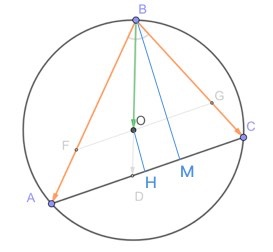
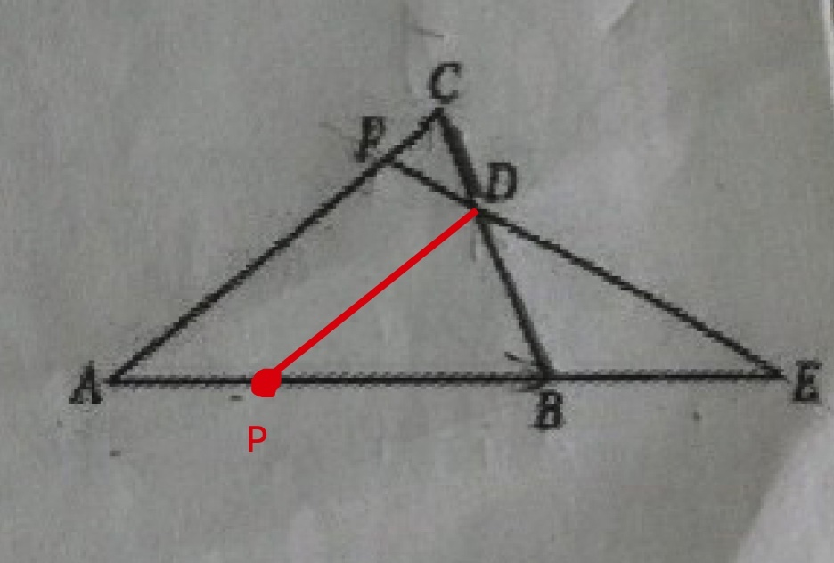

【平面向量】 20190420B
已知O为ΔABC的外心,∠ABC=π3,BO−→−=λBA−→+μBC−→−,则λ+μ的最大值()
小蒋的解答:

🍋知识点1:向量表示为一组基底向量的性质
BD−→−=λ1BA−→+μ1BC−→−
∵ADC共线,∴λ1+μ1=1
设BO−→−=mBD−→−,则BO−→−=mλ1BA−→+mμ1BC−→−
即有λ+μ=mλ1+mμ1=m
题意变成求m的最大值
🍋知识点2: 圆周角性质(初中)
B点在圆上移动的时候,其角度是不会变化的
作OH垂直AC于H,作BM垂直AC于M
m=|BO−→||BD−→|=BD−ODBD=1−ODBD=1−OHBM
∵OH固定不变,∴当BM最大时,m最大
很容易得到BA=BC时,BM达到最大
🍋知识点3: 正三角形四心合一(初中)
达到最大时,O同时也是正三角形BAC的重心,也就是BOBD=23
即m最大为23
结论:λ+μ最大为23
【平面向量】 20190420A
如图,在ΔABC中,BD−→−=3DC−→−,AE−→−=mAB−→,AF−→−=nAC−→−,m>0,n>0,则1m+3n=()

小蒋的解答:
🍋知识点1:向量分解
已知DCBD=13
易得APAB=14,PDAC=34
AD−→−=AP−→+PD−→−
AD−→−=14AB−→+34AC−→−
结合题意AD−→−=14mAE−→−+34nAF−→−
🍋知识点2:向量表示为一组基底向量的性质
AD−→−=14mAE−→−+34mAF−→−
根据性质:EDF三点共线⇔14m+34n=1
结论:1m+3n=4
【平面向量】 20190330A
如图,在ΔABC中,AD是BC边上的高,若AB−→=a→,BC−→−=b→,则BD−→−=()

小蒋的解答:
🍋知识点1:向量投影法则,数量积
根据向量投影法则,即BD是BA在BC上的投影,
∴有BD−→−⋅BC−→−=BA−→⋅BC−→−
BD−→−⋅b→=a→⋅b→
|BD−→−|⋅|b→|=a→⋅b→
∴|BD−→−|=a→⋅b→|b→|
🍋知识点2:单位向量,数乘
b→方向上的单位向量是b→|b→|
∴BD−→−方向上的单位向量是b→|b→|
∴BD−→−=|BD−→−|⋅单位向量=a→⋅b→|b→|⋅b→|b→|=a→⋅b→|b→|2⋅b→